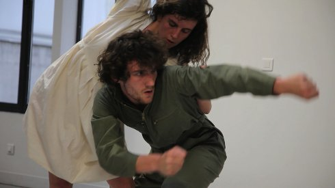

Ne travaille pas (1968-2018)
(Don't Work 1968-2018)

César Vayssié
Friday 12 okt 8.30 pm werkstattkino
Elsa Michaud and Gabriel Gauthier are both students at the Beaux-Arts school in Paris. They are in a relationship and conduct artistic research together. They become artists in chaotic times. The footage, without dialogue, hypnotised by the music of the duo Avia X Orly, combines gestures, symbols, world events and the everyday life of the two students from March 2017 to March 2018. The film harnesses the frenzy of the digital flow through a visual proposal. It presents the paradoxes of a society celebrating the events of May 68, fifty years on.
César Vayssié biobiobiobio
|
| Films The Lady Crying 2012 – The Sweetest Choice 2015 – UFE 2016 (11. UX) – Ne travaille pas (1968-2018) 2018
|